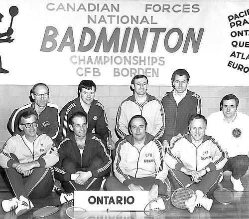
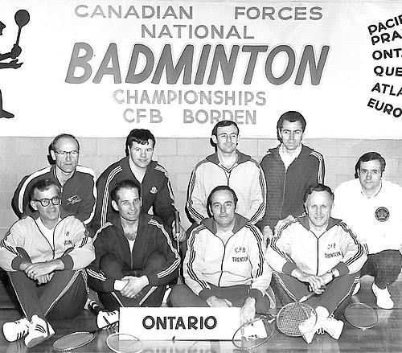

Histoire de la Base des Forces canadiennes Borden
Accès à l’album de photos
La menace de la guerre plane
IEn 1914, une insurrection a commencé à Sarajevo et le gouvernement du Canada comprend que la nécessité de trouver un endroit où entraîner les soldats devient urgente. Les démarches entreprises mènent à l’acquisition d’un terrain de 18 000 acres, Sandy Plains, au coût de 1 à 3 $ par acre.
La construction d’une base
En avril 1916, le 157e Bataillon, maintenant appelé le Grey and Simcoe Foresters, arrive de Barrie et Collingwood et commence le défrichage. Les hommes vivent dans des tentes et font leur toilette dans les rivières Mad et Pines avant la construction de quatre douches à cette fin.
En juillet 1916, les travaux vont bon train, et le Camp Borden ressemble à un village de toile avec ces installations qui peuvent accueillir 30 000 personnes à la fois.
Les années de la guerre
Des milliers de ces soldats sont formés ici à la BFC Borden, partout sur la base, y compris les 18 km de tranchées creusées sur place aux fins de simulation pendant la Première Guerre mondiale.
Deux gares ferroviaires sont établies sur la route Waterloo pour aider aux déplacements des soldats. Chaque jour, 20 000 personnes empruntent la voie ferrée.
De l’espace pour la force aérienne
Au cours de l’année 1916, le Royaume-Uni demande de l’espace pour entraîner les aviateurs. Le Royal Flying Corps requiert une installation, et un terrain de 1 000 acres lui est cédé au Camp Borden. La voie ferrée est prolongée depuis le sud de la Base jusqu’à l’emplacement du terrain d’aviation.
En 1917, les hommes travaillent d’arrache-pied dans le froid et la neige, sept (7) jours par semaine pendant les mois de janvier, février et mars pour construire 57 bâtiments qui hébergeront les 1 700 hommes engagés entre Noël et le Nouvel An.
Lors de l’ouverture officielle en mai 1917, l’entraînement bat déjà son plein sur le terrain d’aviation. Dans le premier groupe de recrues se trouve un jeune homme appelé James Harold Talbot, qui deviendra la première perte dans l’histoire de l’aviation militaire canadienne.
Après la guerre
En 1924, Borden devient la plus grande station aérienne au Canada. Au cours des années 1930, Borden se transforme en une base d’instruction militaire permanente. Les écoles des Transmissions, de l’Arme blindée, de l’infanterie, de l’intendance militaire, du Service de santé, du Service dentaire, de la prévôté, du renseignement et de la guerre nucléaire, biologique et chimique y sont établies dans les années qui suivent.
Les années 1940
En 1940, l’Aviation royale du Canada (ARC) crée ce qui est aujourd’hui le Dépôt de munitions des Forces canadiennes (DMFC) à Angus, et poursuit l’entraînement des pilotes et du personnel navigant durant la Seconde Guerre mondiale.
Par suite de l’avènement de l’avion à réaction, seuls les techniciens de maintenance d’aéronefs continuent d’être formés à Borden.
Les années 1960
En 1966, la BFC Borden devient une base d’instruction intégrée et les écoles suivantes sont ensuite formées :
- École d’administration et de logistique des Forces canadiennes (EALFC)
- École du génie aérospatial et du matériel des Forces canadiennes (EGAMFC)
- École du Service de santé des Forces canadiennes (ESSFC)
- École du Service dentaire des Forces canadiennes (ESDFC)
- École du renseignement et de la sécurité des Forces canadiennes (ERSFC)
- École de guerre nucléaire, biologique et chimique des Forces canadiennes (EGNBCFC)
- École d’éducation physique et de loisirs des Forces canadiennes (EEPLFC)
- École de didactique des Forces canadiennes (EDFC)
- École des armes de combat
Les années 1970 et 1980
En 1970, l’École de l’Arme blindée et l’École de l’infanterie déménagent à Gagetown, et l’école des langues voit le jour. L’École de didactique des Forces canadiennes (EDFC) prend le nouveau nom de Centre de développement de l’instruction des Forces canadiennes (CDIFC).
Les années 1990
En 1995, le Service du recrutement, de l’éducation et de l’instruction des Forces canadiennes (SREIFC) est déménagé de Trenton à Borden dans un effort pour centraliser les fonctions d’état-major.
En 1997, on met sur pied l’organisation du commandant des Écoles (cmdt Écoles), en fusionnant le personnel du sous-chef d’état-major – Instruction professionnelle et celui de la BFC Borden. En 1999, l’organisation du cmdt Écoles fait l’objet d’une réorganisation et devient le Groupe de l’instruction de soutien des Forces canadiennes (GISFC).
Aujourd’hui
En 2002, le SREIFC est aboli dans le cadre du processus continu d’amélioration de l’instruction.
En 2013, dans le cadre du rétablissement des désignations historiques de l’Armée canadienne, l’École du génie électrique et mécanique des Forces canadiennes (EGEMFC) est renommée l’École du génie électrique et mécanique royal canadien (EGEMRC).


 
